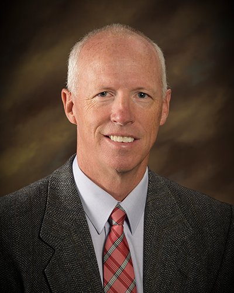
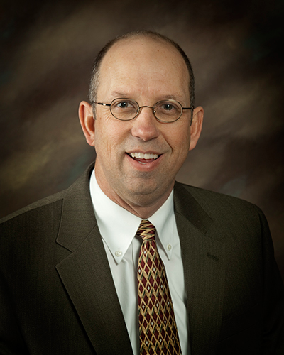
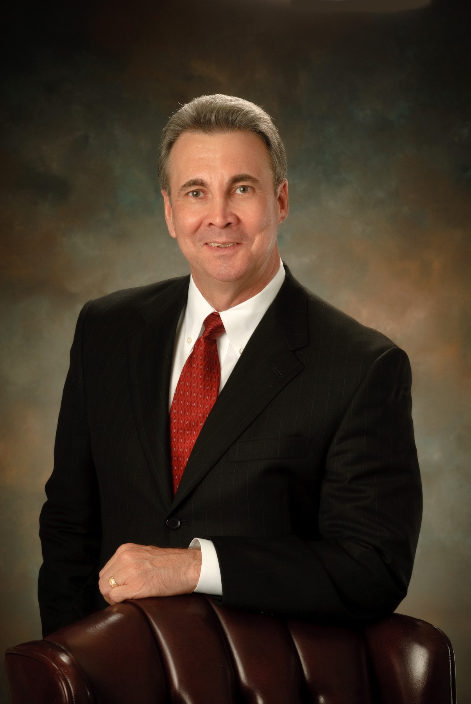
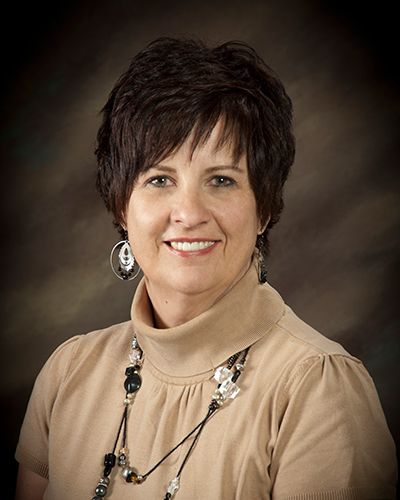

October 24, 2017 - Wendy Harris
Wendy Harris came to Ricks College in 1994 to teach interior design. She had previously taught interior design at Northern Arizona University. She received a bachelor's degree in interior environment from BYU and a master's degree in computer-aided design and art history from Northern Arizona University. She has professional experience in the interior design industry working with visual merchandising, architectural drafting and illustration, and residential and commercial interior design. Sister Harris has served in primary, Sunday school, young women, relief society, and all the ward music callings. She is currently an ordinance worker at the Rexburg temple. A native of Salt Lake City, Wendy and her husband, Michael, have a blended family of six children and eight grandchildren. Wendy loves to travel and considers herself a Francophile (a person who has a strong admiration of France).

October 31, 2017 - Shawn Johansen.
Shawn Johansen is currently the Chair of the History, Geography, and Political Science department at BYU-Idaho. He teaches U.S. history, historical research and writing, and the history of the U.S. Constitution and law. He graduated with a B.A. in History from BYU, and a Ph.D. in U.S. History from UCLA. He has taught at Occidental College, Southwest Missouri State University, Frostburg State University, and now fifteen years at BYU-Idaho. He is the author of Family Men: Middle-Class Fatherhood in Early Industrializing America, published by Routledge Press. He served a mission in Taiwan, is married to Michelle Harding Johansen, and has six children.

November 7, 2017 - Tyler Barton
Tyler Barton became a Student Honor Administrator at BYU-Idaho eight years ago. He was born in Anaheim, California, the second of eleven children, and was raised in Utah. Brother Barton earned a bachelor's degree in elementary education from Brigham Young University and a master's degree in school counseling from Utah State University. He worked in public education for twenty years before coming to BYU-Idaho For the past 38 years, Brother Barton has also worked as a professional whitewater guide in the Grand Canyon, Canyonlands, and the Frank Church River of No Return Wilderness. He served a mission in the Tonga Nukualofa Mission on Niue Island and is now serving as a counselor in the Rexburg Center Stake presidency. Tyler loves to spend time with his wife, Sharee Howard Barton, their 4 children, and 3 grandchildren. He also enjoys fly fishing, reading, and serving in the Church.

November 14, 2017 - Zeph Quirl
Animal & Food Science Department Chair
Biography in progress

November 21, 2017 - Karen Kunz
Executive Office Administrative Assistant
Biography in progress